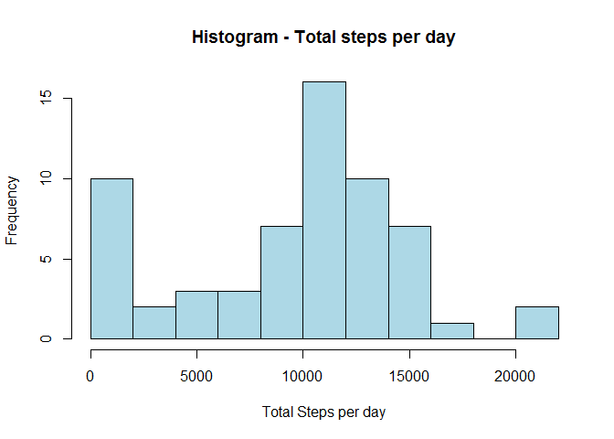
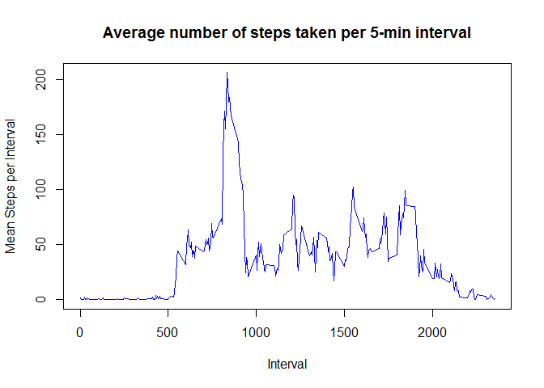
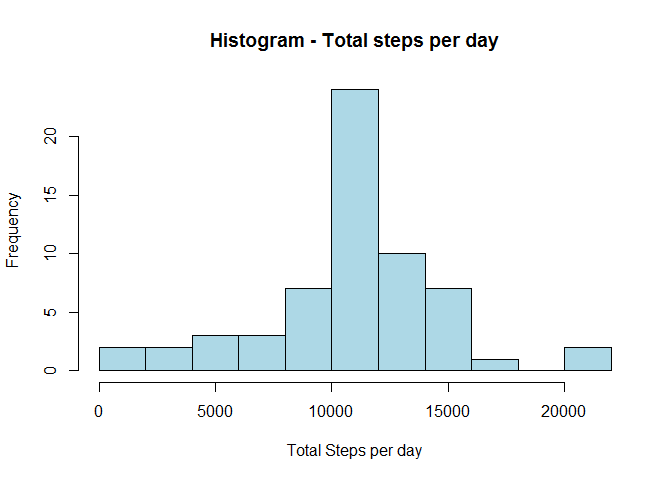
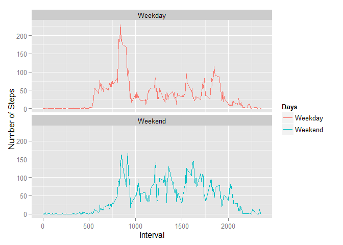

library(ggplot2)
unzip("activity.zip")
activityData <- read.csv("activity.csv", header=TRUE,
colClasses=c("numeric", "character", "numeric"))
activityData$steps <- as.numeric(activityData$steps)
activityData$date <- as.Date(activityData$date)
activityData$interval <- as.numeric(activityData$interval)dailySteps <- aggregate(activityData$steps,
list(day=activityData$date),
sum, na.rm=TRUE)
colnames(dailySteps) <- c("Day", "Steps")
hist(dailySteps$Steps, col="lightblue",
xlab="Total Steps per day",
main = "Histogram - Total steps per day", breaks=15)
meanSteps <- as.character(round(mean(dailySteps$Steps)))
medianSteps <- as.character(median(dailySteps$Steps))intervalSteps <- aggregate(activityData$steps,
list(interval=activityData$interval),
mean, na.rm=TRUE)
colnames(intervalSteps) <- c("Interval", "Steps")
plot(intervalSteps$Interval, intervalSteps$Steps,
type = "l", col="blue",
xlab = "Interval", ylab = "Mean Steps per Interval",
main="Average number of steps taken per 5-min interval")
maxIndex <- which.max(intervalSteps$Steps)
maxInterval <- intervalSteps$Interval[maxIndex]missingIndex <- is.na(activityData$steps)
numMissingValues <- sum(missingIndex)
imputedData <- activityData
for (i in which(is.na(activityData$steps))) {
imputedData$steps[i] <- intervalSteps$Steps[which(intervalSteps$Interval == imputedData$interval[i])]
}
imputedDailySteps <- aggregate(imputedData$steps,
list(day=imputedData$date),
sum, na.rm=TRUE)
colnames(imputedDailySteps) <- c("Day", "Steps")
hist(imputedDailySteps$Steps, col="lightblue",
xlab="Total Steps per day",
main = "Histogram - Total steps per day", breaks=15)
imputedMeanSteps <- as.character(round(mean(imputedDailySteps$Steps)))
imputedMedianSteps <- as.character(round(median(imputedDailySteps$Steps)))isWeekend <- function(x) {
return(weekdays(x) %in% c("Saturday", "Sunday"))
}
imputedData$Days <- isWeekend(imputedData$date)
imputedData$Days <- c("Weekday", "Weekend")[imputedData$Days + 1]
g <- ggplot(imputedData)
g + stat_summary(aes(interval, steps, color=Days),
fun.y = mean,
na.rm = TRUE,
geom = 'line') +
labs(x="Interval",y = 'Number of Steps') +
facet_wrap(~ Days, ncol=1)